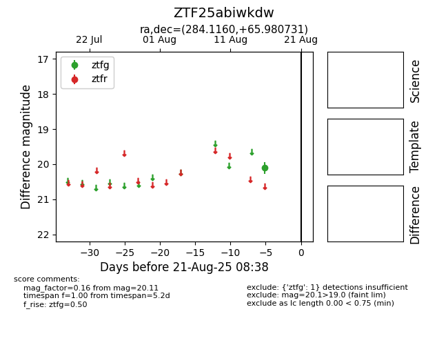

Target ZTF25abiwkdw at 2025-08-21 08:38, see:
FINK: fink-portal.org/ZTF25abiwkdw
Lasair: lasair-ztf.lsst.ac.uk/objects/ZTF25abiwkdw
ALeRCE: alerce.online/object/ZTF25abiwkdw
alt names
ZTF25abiwkdw (ztf,alerce)
coordinates:
equatorial (ra, dec) = (284.1160,+65.98073)
galactic (l, b) = (96.4539,+24.11415)
photometry
last ztfg=20.11
1 ztfg detections
